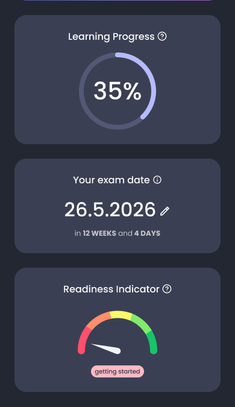
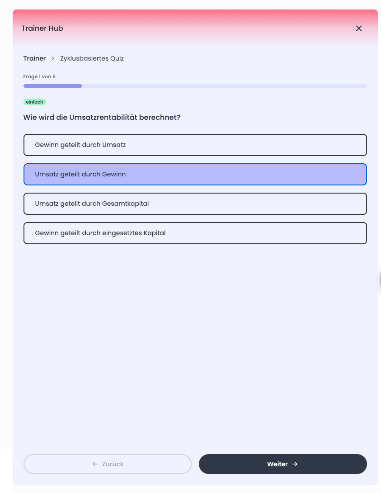
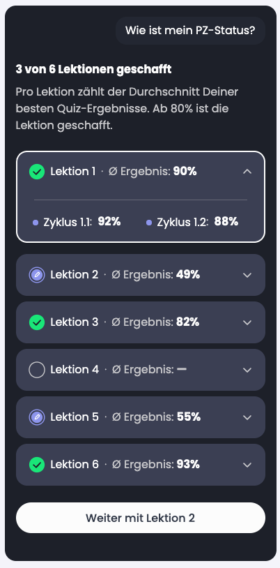
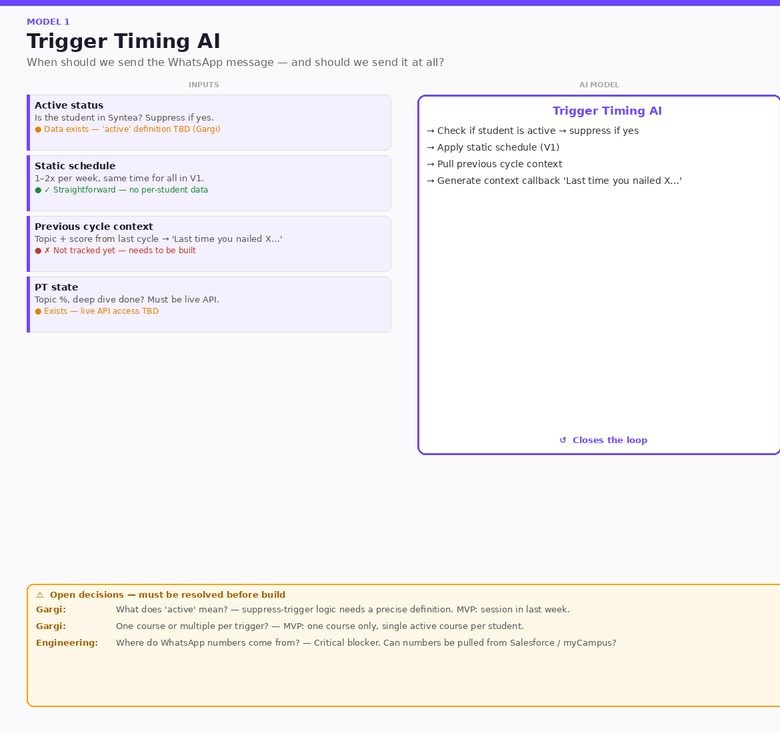
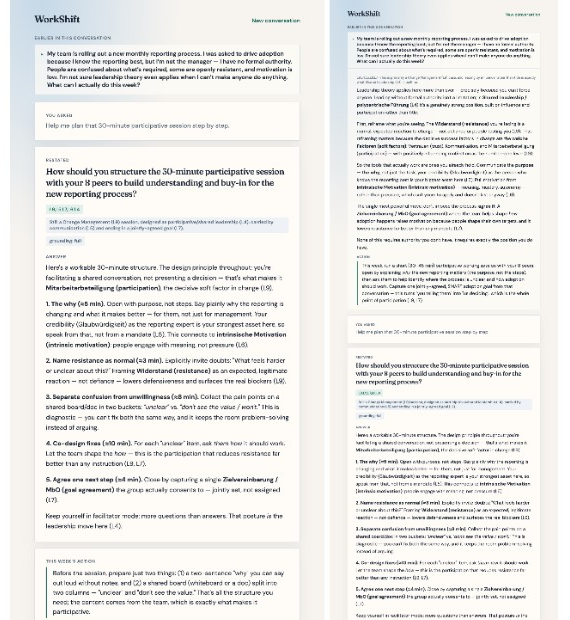
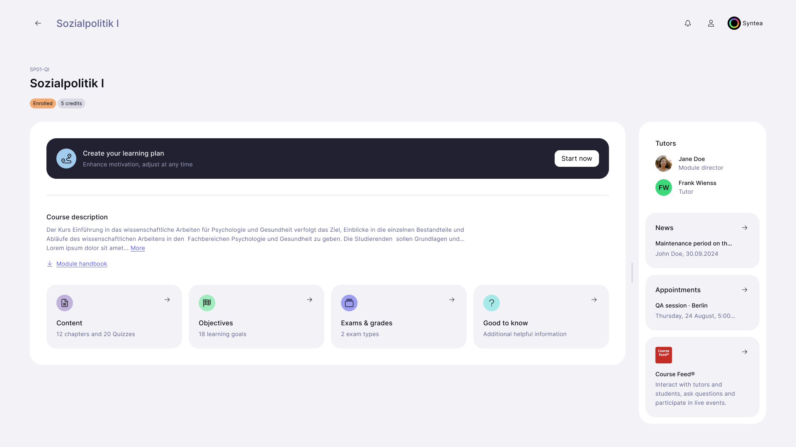
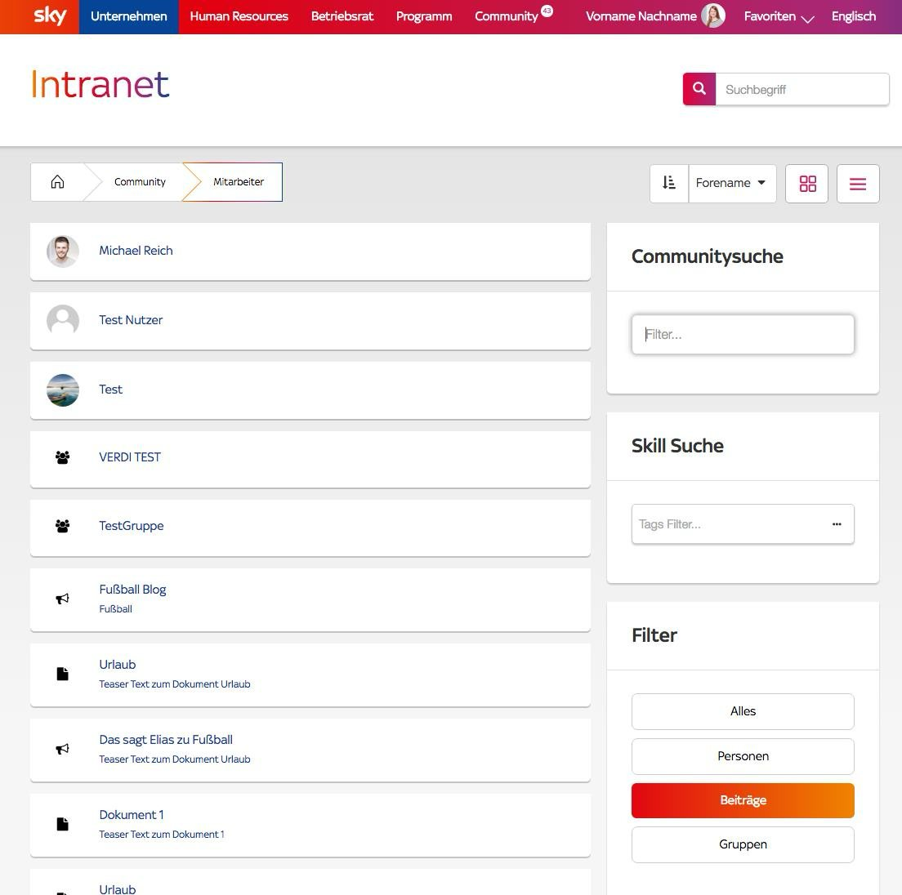

Selected work · 2014 – 2026
Problems worth a designer’s time
Seven cases from the last years. Most recent first: AI products in education, then the work that came before, from media and business software to building UX practices in teams.
Designing for AI · 2025 – 2026

Exam readiness
Building trust in one answer to “am I ready?”, and keeping it separate from “am I allowed to take the exam?”

The Trainer
The most-used feature for exam prep. The work was taking out the friction.

Exam admission
Could practising regularly count toward exam admission?

Building a study habit
A WhatsApp nudge to keep students studying: whether to send it, when, what it says, and when to stay quiet.

WorkShift
Turning a leadership course into one thing to try at work this week.
Scale, platforms and design leadership · 2014 – 2025

myCampus 2.0
Streamlining the whole student journey — course overview, learning and results — into one place, with AI built in.

Sky: one visual language, many platforms
The help centre, the intranet and the newsletters of a pay-TV brand, carried through years of redesigns and relaunches without losing one consistent visual language.
Earlier work, 2007 – 2024
Websites, applications, interfaces and print for IU, Zetcom, Canto, Giesecke & Devrient, Großmarkthalle and BMW. See the gallery →